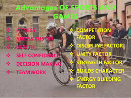
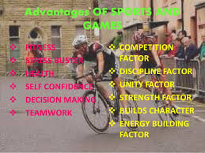

A sports game is a video game that simulates the practice of sports . Most sports have been recreated with a game, including team sports, track and field, extreme sports and combat sports. Some games emphasize actually playing the sport (such as the Madden NFL series), whilst others emphasize strategy and sport management (such as Championship Manager and Out of the Park Baseball). Some, such as Need for Speed, Arch Rivals and Punch-Out!!, satirize the sport for comic effect. This genre has been popular throughout the history of video games and is competitive, just like real-world sports . A number of game series feature the names and characteristics of real teams and players, and are updated annually to reflect real-world changes. Sports games involve physical and tactical challenges, and test the player's precision and accuracy. Most sports games attempt to model the athletic characteristics required by that sport, including speed, strength, acceleration, accuracy, and so on. As with their respective sports, these games take place in a stadium or arena with clear boundaries. Sports games often provide play-by-play and color commentary through the use of recorded audio.
There goes a good proverb—”All work and no play makes Jack a dull boy“. Games and sports are not only important for success in studio but it is important for success in every walks of our life. Games and sports include all outdoor and indoor games and also athletics. In ancient Greece they formed the principal part of education. In the advanced countries of the present day also they are a regular feature of the school and college curriculum. Games and sports may be of various kinds. Apart from school or college sports, boys and girls may practice races, jumps, discuss throw and javelin throw and thus pass their afternoon in useful activities. They may play various games like football, cricket, hockey, volleyball, basket ball, badminton etc.
 

The sports and games are broadly classified into 2 :-